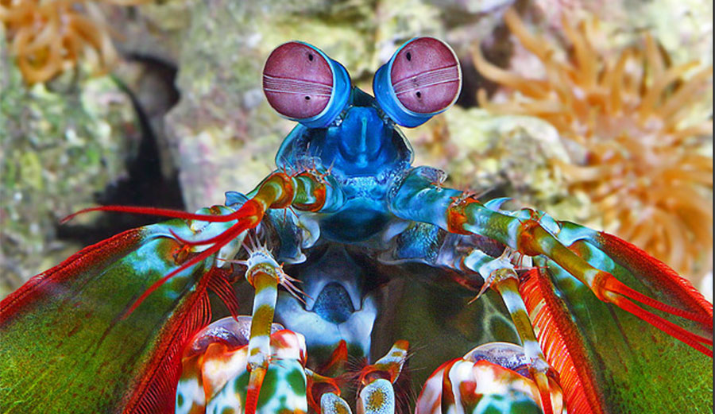
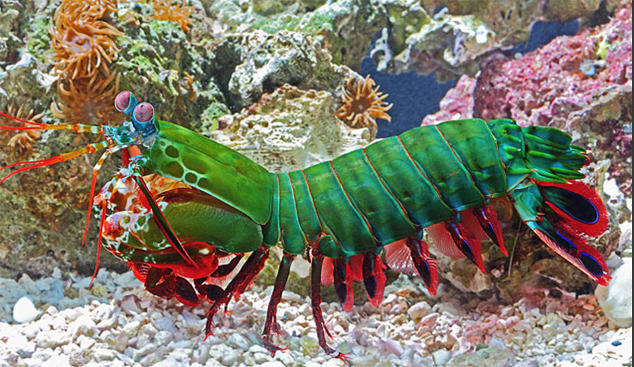

Prazer, já nos vimos antes?
Popularmente chamado de tamarutaca ou de lacraia-do-mar no Brasil, é um animal bastante esquisito, que particularmente eu não fazia ideia da sua existência, seu nome científico é Odontodactylus scyllarus. Como não fui um aluno muito exemplar nas aulas de biologia do ensino médio no CEFET, apesar de ser vizinho do meu professor e volta e meia "filar" aquela boa e velha carona pra casa, mesmo agora já sabendo o seu nome científico, não reconheço esse animal. Um forte abraço prof Batatinha, gente boa!!! Na lingua inglesa, é conhecido como mantis shrimp, nesse ponto ele começa ficar familiar, ao menos pelo seu nome, pois mantis me recordo de já ter ouvido falar e shrimp, é o famoso camarão, ora, esse cara é parente do camarão, é um tipo de crustáceo de água salgada, e nesse ponto acho que já começamos a ficar mais íntimos nessa breve apresentação. A seguir iremos conhecer algumas curiosidades desse nosso novo "parça". Como meus avós dizem, puxando pela "gerendência" (um jeitinho santarritense de falar a origem familiar de alguém), sua classificação científica é:
| Reino | Filo | Subfilo | Classe | Subclasse | Ordem |
| Animalia | Arthropoda | Crustacea | Malacostraca | Hoplocarida | Stomatopoda |
Olho de Tandera
Se algum dia esse cara achar que você é possivelmente uma presa em potencial, preocupe-se, pois a visão dele vai além do alcance.
Seu sentido é muito apurado e é capaz de interpretar polarização no espectro ultravioleta e infravermelho. Uma visão bem melhor que muitos bandeirinhas na linha de impedimento.
Seu olhar 43 tem o mais complexo sistema de visão de cores do mundo animal, conseguindo enxergar 12 cores primárias, que são os 12 pigmentos diferentes que compõem a sua retina.
Olhe profundamente para esses lindos olhos, que eles verão até a cor da sua aura.

A criança cresceu
O fator crescimento nessa espécie curiosa, é outra característica fantástica que chama atenção.
De hábitos exclusivamente carnívoros, costuma alimentar-se de caranguejos, camarões, peixes, moluscos ou de outros da sua própria espécie, ou seja, é adepto a dieta da sopa: passou na frente dando sopa, ele come.
Seu tamanho pode partir de poucos milímetros até cerca de 40cm em suas espécies maiores.
Seria incrível se meu salário crescesse assim também.

Dana White, corre aqui...
No UFC do fundo do mar não tem pra ninguém. Com sua pata raptorial sempre engatilhada para desferir um soco poderoso, que pode chegar a uma velocidade de 80km/h, marca comparada a um tiro de arma de fogo calibre .22, gerando um impacto de 60kg/cm².
Não atoa é chamada também de lagosta-boxeadora. Com um jab desse, reinaria em sua categoria de peso no MMA ou boxe, desconfio inclusive desse animalzinho já não ter treinado com Luiz Dórea.
Nesse vídeo abaixo podemos ver a potência dos seus golpes e seu excelente jogo de chão, mostrando seu repertório de grappling e um poder de nocaute fulminante.
Referências Bibliográficas
- STOMATOPODA. In: WIKIPÉDIA, a enciclopédia livre. Flórida: Wikimedia Foundation, 2019. Disponível em: